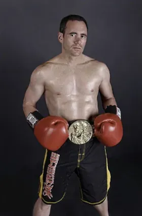

This extremely edgy and rugged actor / kick boxer has played many roles from a street wise drug dealer to a real life war hero on the true story of the Battle of Medak Pocket and many more in between. His acting roots stemmed from his kick boxing and boxing career in the early to late 80's with a perfect record of 22 wins and no losses. From there he was approached by a talent agency and things just snowballed from there. Craig has been keeping busy with his acting roles as well as his martial arts where he has just made his MMA, mixed martial arts debut in April 07 with a punishing third round knock out victory ending it with a left right combination and finishing him off with a devastating round house to the head. Craig is a very calm and collected person but can snap into character on screen or in the ring on a dime. His intensiveness gives him the edge when it comes to the more gritty roles he has chosen but his versatility as an actor makes him a great candidate for any role. Weather it be a mobster to CIA agent or a grieving father and yes, comedy as well.
Along with his acting, martial arts and personal training Cyr has also played a wide array of sports such as soccer, hockey and lacrosse to name a few. This, he says "has kept me in top shape all of these years". This well rounded athlete has also choreographed many of the fight scenes he has been in as well as coordinated on other action films. He has also done all of his own stunts and states "I wouldn't have it any other way" Craig's wide range of fighting skills and knowledge of martial arts comes from travelling extensively throughout the US and Canada fighting at all levels from freestyle kung fu to boxing and kick boxing. Cyr has also fought in such places as the American Gladiator Arena where he met and became friends with one of the gladiators "Dallas" (Shannon Hall) who was also in his corner for the fight. Shannon also has such credits as tough woman world champion, IFBA boxing champion, Miss America California finalist and finally WWE Wrestler. Craig has also trained with and met other well known names such as the martial arts hall of fame inductee Ruben Morales, the "Ice Man" John Eves Theriault, the former middle weight world kickboxing champion who is among one of Cyr's favourite kick boxers of all time along with Dennis the "Terminator" Alexio but Cyr, never limited also trained with boxing greats as well. Such as Pinklon Thomas, former world heavy weight champion, Patrick Washington, former junior welter weight champion, Hector "Macho" Comacho, former world champion and fellow Canadian Bryon Mackie, Canadian champ. After winning 2 belts of his own and then a ten year hiatus you would think Cyr would call it quits. No way! He then returned to throw his hat into the world of mixed martial arts cage fighting witch he claims has been the toughest so far but states "I wish I would have gotten into this fifteen years ago". Cyr is not just limited to hand to hand combat either. He has a wide variety of weaponry under his belt as well. Whether it is a sword or an AK-47 Craig can pretty much do it all. Where will he stop? No one knows for sure. As far as Cyr is concerned, he is just getting started!